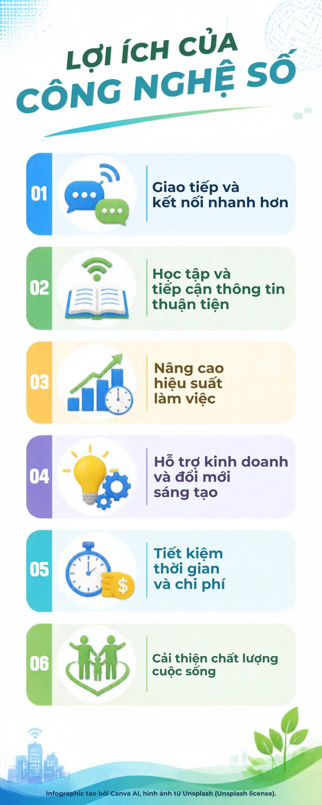

Infographic

Video YouTube

💡 Trực quan – Hiện đại – Sinh động
Kết hợp hình ảnh infographic và video giúp nội dung dễ theo dõi và ghi nhớ hơn.
Khám phá thông tin một cách trực quan và sinh động, được phát triển bởi Thanh Nhã

Kết hợp hình ảnh infographic và video giúp nội dung dễ theo dõi và ghi nhớ hơn.